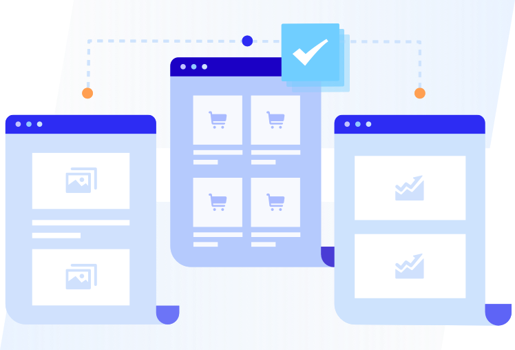

可视化编辑
支持通过可视化界面，编辑页面元素的文字、背景图、大小、位置等，实现实验版本的快速创建。
A/B实验
支持通过可视化编辑生成同一个页面的多个细微差别的实验版本并进行随机实验，以得出效果最佳的页面调整版本。


多网址实验
支持对多个独立页面进行随机实验，以得出相对差异较大的方案中哪组效果更好。
AI控流
智能分析实验结果，并基于效率优先或效果优先进行流量的自动分配，实现最高效的科学流量分配。